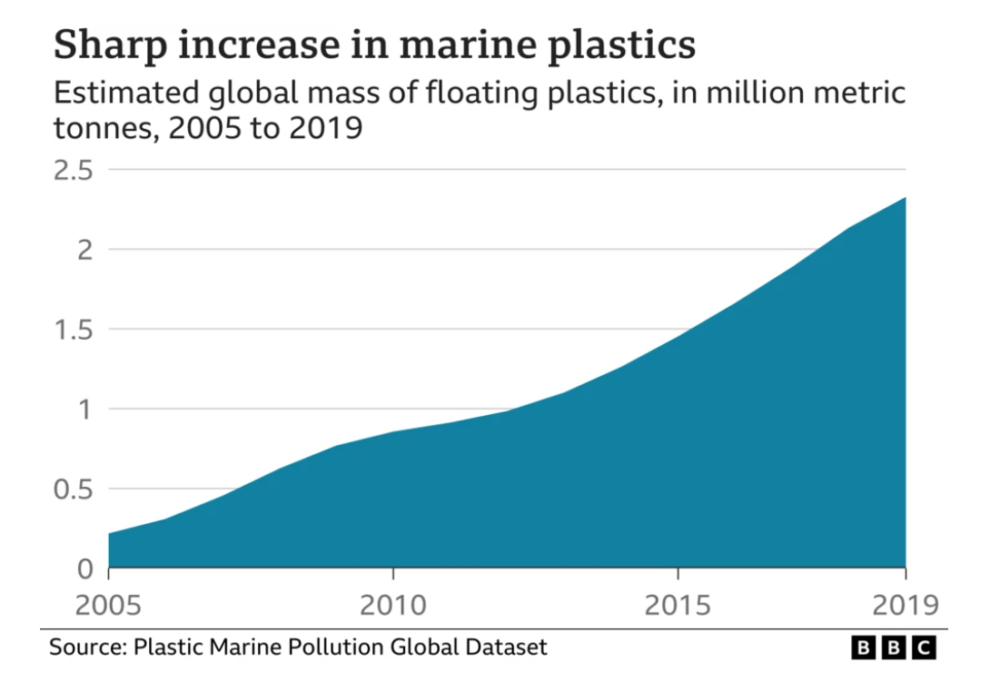

The UN, WWF, Oceanic Society, and National Geographic Society argue that plastic straws contribute to overall plastic pollution and are impacting the health of our ocean and ecosystems. Items like plastic straws pose a threat to marine life, the food chain, human health, and the delicate balance of our planet's aquatic environments.
Plastic is one of the most enduring materials man has created and as humans we dispose of it without thinking. As a result, marine life gets entangled in our plastic straws. Plus, we know that it can take hundreds of years for plastic to degrade, and research is showing that it does not even fully degrade, but becomes what we call microplastic. Microplastics are tiny particles of plastic that can be eaten by marine animals and end up in their bodies and tissues, entering the food chain and leading to disastrous consequences for the health of our planet and all its inhabitants.
Scientists from the Scripps Institution of Oceanography have noted that microplastics are now found in over 114 aquatic species, with many ending up on our dinner plates. This raises urgent concerns about the long-term effects on both animal and human health.
Research published in "Nature Communications" shows that plastic waste disrupts coral reefs by increasing disease levels in corals by up to 89%. Since coral reefs are vital ecosystems for countless marine species, this has cascading effects across the ocean food web.
A study by the University of Plymouth found that over 70% of deep-sea fish examined had microplastics in their stomachs. This suggests that plastic contamination has reached even the most remote and unexplored parts of the ocean.

Diagram 2: This chart illustrates the dramatic increase in marine plastic pollution over recent years. The data reveals a steep upward trend, emphasizing the urgency for action and sustainable alternatives.